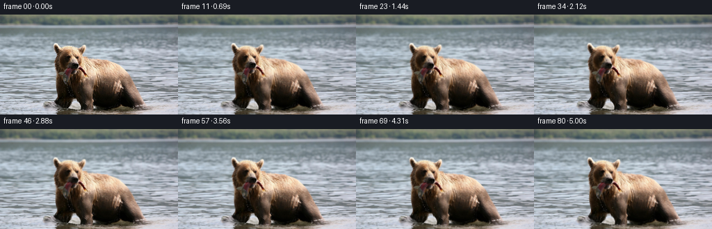
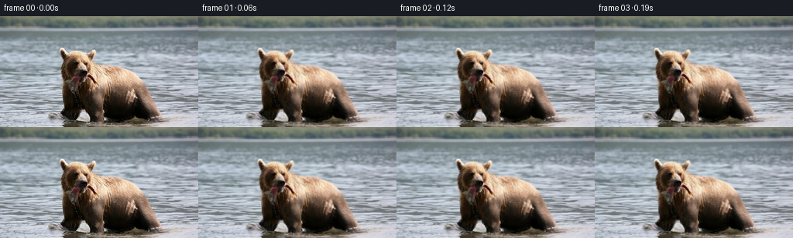
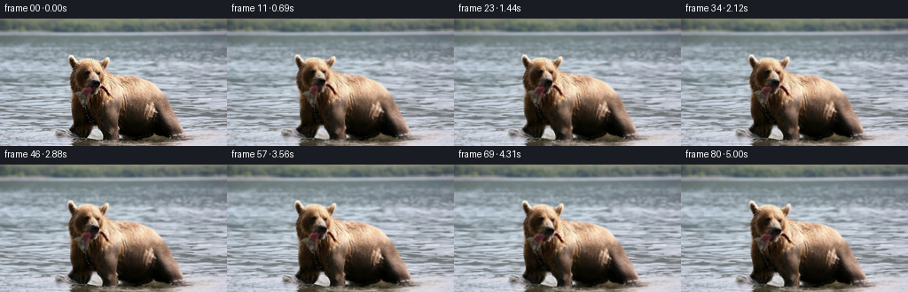
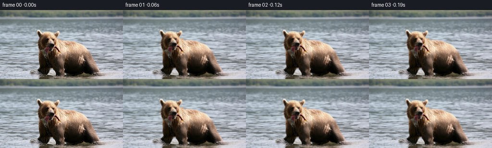

← 本轮 smoke 总览traex/DeepSeek-V4.1-Flash · 0872_s3
vision-agent · 256×144 · 16 FPS · 81 帧 · 状态 running · 输出 tokens None
原始任务a brown bear in the water with a fish in its mouth
当前保存结果
此结果可播放，但该运行尚未通过最终提交审核。页面展示不代表评测通过。
已保存候选与代码修改
这里按时间展示外部捕获的候选，每份均可单独播放。保存新版本不等于完成视觉检查；下方工具证据记录实际看过的图。
候选 01 · 2026-11-08T21:01:08.006200+00:00 · 点开播放与检查图
inspection.png

transition_check.png

代码变化
--- 上一保存版本
+++ 本次保存版本
@@ -0,0 +1,139 @@
+"""Generate a short natural-history clip from the supplied still frame."""
+
+from pathlib import Path
+
+import cv2
+import numpy as np
+from PIL import Image
+
+import artifact_io
+
+
+ROOT = Path(__file__).parent
+WIDTH, HEIGHT = 256, 144
+FRAMES = 81
+FPS = 16
+
+
+def smoothstep(value):
+ value = np.clip(value, 0.0, 1.0)
+ return value * value * (3.0 - 2.0 * value)
+
+
+def gaussian_field(x, y, cx, cy, sx, sy):
+ return np.exp(-0.5 * (((x - cx) / sx) ** 2 + ((y - cy) / sy) ** 2))
+
+
+def make_displacement_fields(t):
+ """Return a smooth, inverse image warp for normalized clip time t."""
+ yy, xx = np.mgrid[0:HEIGHT, 0:WIDTH].astype(np.float32)
+ tau = 2.0 * np.pi
+
+ # A restrained dolly gives the shot depth without making the forest crawl.
+ dolly = smoothstep(t) * 0.0075
+ center_x, center_y = 139.0, 84.0
+ cam_x = center_x + (xx - center_x) / (1.0 + dolly)
+ cam_y = center_y + (yy - center_y) / (1.0 + dolly)
+ cam_x += 0.20 * np.sin(tau * 0.18 * t)
+ cam_y += 0.10 * np.sin(tau * 0.27 * t + 0.6)
+
+ # The river surface has two crossing wave trains. The lower, closer water
+ # receives slightly more displacement, which reads as gentle parallax.
+ water_weight = smoothstep((yy - 39.0) / 17.0)
+ depth = 0.52 + 0.48 * smoothstep((yy - 52.0) / 90.0)
+ wx = (
+ 0.42 * np.sin(tau * (xx / 47.0 - 0.72 * t))
+ + 0.20 * np.sin(tau * (yy / 18.0 + 0.55 * t) + 0.8)
+ + 0.12 * np.sin(tau * (xx / 19.0 + yy / 31.0 - 1.25 * t) + 1.7)
+ )
+ wy = (
+ 0.18 * np.sin(tau * (xx / 34.0 + 0.43 * t) + 0.4)
+ + 0.11 * np.sin(tau * (xx / 63.0 - yy / 20.0 - 0.67 * t) + 1.1)
+ )
+ dx = cam_x - xx + wx * water_weight * depth
+ dy = cam_y - yy + wy * water_weight * depth
+
+ # The body settles and breathes, while the neck supports a slower nod.
+ breath = np.sin(tau * (0.54 * t + 0.08))
+ settle = np.sin(tau * (0.31 * t + 0.18))
+ body = gaussian_field(xx, yy, 159.0, 100.0, 55.0, 38.0)
+ chest = gaussian_field(xx, yy, 103.0, 101.0, 29.0, 31.0)
+ dx += (0.72 * breath + 0.24 * settle) * body
+ dy += (0.42 * breath - 0.17 * settle) * (0.75 * body + 0.25 * chest)
+
+ head = gaussian_field(xx, yy, 100.0, 66.0, 27.0, 24.0)
+ nod = 0.58 * np.sin(tau * (0.72 * t + 0.08)) + 0.20 * np.sin(tau * (1.36 * t + 0.19))
+ turn = 0.022 * np.sin(tau * (0.49 * t + 0.27))
+ dx += (-turn * (yy - 83.0)) * head
+ dy += (nod + turn * (xx - 116.0)) * head
+
+ # The fish is held at one end and flexes from the mouth downward.
+ fish = gaussian_field(xx, yy, 95.0, 88.0, 13.0, 15.0)
+ fish_wag = 0.090 * np.sin(tau * (1.72 * t + 0.12)) + 0.028 * np.sin(
+ tau * (3.05 * t + 0.04)
+ )
+ dx += (-fish_wag * (yy - 76.0) - 0.38 * np.sin(tau * 1.72 * t)) * fish
+ dy += (fish_wag * (xx - 99.0) + 0.22 * np.cos(tau * 1.72 * t)) * fish
+
+ # Radial contact ripples at the chest and the two nearest paws.
+ for cx, cy, phase in ((78.0, 121.0, 0.0), (122.0, 133.0, 0.9), (163.0, 139.0, 1.8)):
+ r = np.sqrt(((xx - cx) * 1.10) ** 2 + (yy - cy) ** 2)
+ ring_radius = 4.0 + 19.0 * t
+ ring = np.exp(-((r - ring_radius) / 2.3) ** 2)
+ ring *= smoothstep((yy - 100.0) / 25.0)
+ ripple = np.sin(tau * (2.1 * t - phase))
+ dx += 0.42 * ring * ripple * (xx - cx) / (r + 1.0)
+ dy += 0.28 * ring * ripple * (yy - cy) / (r + 1.0)
+
+ return dx.astype(np.float32), dy.astype(np.float32)
+
+
+def add_water_light(image, t):
+ """Add low-amplitude moving glints on the river without touching the land."""
+ yy, xx = np.mgrid[0:HEIGHT, 0:WIDTH].astype(np.float32)
+ tau = 2.0 * np.pi
+ water = smoothstep((yy - 42.0) / 14.0)
+ phase = (
+ tau * (xx / 29.0 - 0.82 * t)
+ + 1.7 * np.sin(tau * (yy / 17.0 + 0.33 * t))
+ + 0.8 * np.sin(tau * (xx / 67.0 + yy / 31.0 + 0.41 * t))
+ )
+ crest = np.maximum(np.sin(phase), 0.0) ** 9
+ fine = np.maximum(np.sin(phase * 1.67 + 1.2), 0.0) ** 12
+ amount = water * (1.8 * crest + 0.8 * fine)
+ amount *= smoothstep(t / 0.08)
+ tint = np.array([0.62, 0.72, 0.70], np.float32)
+ return np.clip(image.astype(np.float32) + amount[:, :, None] * tint, 0, 255)
+
+
+def make_frame(source, index):
+ if index == 0:
+ return source.copy()
+ t = index / (FRAMES - 1)
+ dx, dy = make_displacement_fields(t)
+ xx, yy = np.meshgrid(np.arange(WIDTH, dtype=np.float32), np.arange(HEIGHT, dtype=np.float32))
+ frame = cv2.remap(
+ source,
+ xx + dx,
+ yy + dy,
+ interpolation=cv2.INTER_LINEAR,
+ borderMode=cv2.BORDER_REFLECT_101,
+ )
+ frame = add_water_light(frame, t)
+ # A nearly imperceptible exposure lift keeps the gentle dolly from pulsing.
+ frame *= 1.0 + 0.012 * smoothstep(t)
+ return np.clip(frame, 0, 255).astype(np.uint8)
+
+
+def main():
+ source = np.asarray(Image.open(ROOT / "first_frame.png").convert("RGB"))
+ assert source.shape == (HEIGHT, WIDTH, 3)
+ frames = np.empty((FRAMES, HEIGHT, WIDTH, 3), dtype=np.uint8)
+ for index in range(FRAMES):
+ frames[index] = make_frame(source, index)
+ frames[0] = source
+ artifact_io.save(frames, ROOT)
+
+
+if __name__ == "__main__":
+ main()
候选 02 · 2026-11-08T21:02:07.221259+00:00 · 点开播放与检查图
inspection.png

transition_check.png

代码变化
--- 上一保存版本
+++ 本次保存版本
@@ -30,25 +30,25 @@
tau = 2.0 * np.pi
# A restrained dolly gives the shot depth without making the forest crawl.
- dolly = smoothstep(t) * 0.0075
+ dolly = smoothstep(t) * 0.011
center_x, center_y = 139.0, 84.0
cam_x = center_x + (xx - center_x) / (1.0 + dolly)
cam_y = center_y + (yy - center_y) / (1.0 + dolly)
- cam_x += 0.20 * np.sin(tau * 0.18 * t)
- cam_y += 0.10 * np.sin(tau * 0.27 * t + 0.6)
+ cam_x += 0.32 * np.sin(tau * 0.18 * t)
+ cam_y += 0.14 * np.sin(tau * 0.27 * t + 0.6)
# The river surface has two crossing wave trains. The lower, closer water
# receives slightly more displacement, which reads as gentle parallax.
water_weight = smoothstep((yy - 39.0) / 17.0)
- depth = 0.52 + 0.48 * smoothstep((yy - 52.0) / 90.0)
+ depth = 0.62 + 0.50 * smoothstep((yy - 52.0) / 90.0)
wx = (
- 0.42 * np.sin(tau * (xx / 47.0 - 0.72 * t))
- + 0.20 * np.sin(tau * (yy / 18.0 + 0.55 * t) + 0.8)
- + 0.12 * np.sin(tau * (xx / 19.0 + yy / 31.0 - 1.25 * t) + 1.7)
+ 0.62 * np.sin(tau * (xx / 47.0 - 0.72 * t))
+ + 0.31 * np.sin(tau * (yy / 18.0 + 0.55 * t) + 0.8)
+ + 0.16 * np.sin(tau * (xx / 19.0 + yy / 31.0 - 1.25 * t) + 1.7)
)
wy = (
- 0.18 * np.sin(tau * (xx / 34.0 + 0.43 * t) + 0.4)
- + 0.11 * np.sin(tau * (xx / 63.0 - yy / 20.0 - 0.67 * t) + 1.1)
+ 0.25 * np.sin(tau * (xx / 34.0 + 0.43 * t) + 0.4)
+ + 0.14 * np.sin(tau * (xx / 63.0 - yy / 20.0 - 0.67 * t) + 1.1)
)
dx = cam_x - xx + wx * water_weight * depth
dy = cam_y - yy + wy * water_weight * depth
@@ -58,22 +58,28 @@
settle = np.sin(tau * (0.31 * t + 0.18))
body = gaussian_field(xx, yy, 159.0, 100.0, 55.0, 38.0)
chest = gaussian_field(xx, yy, 103.0, 101.0, 29.0, 31.0)
- dx += (0.72 * breath + 0.24 * settle) * body
- dy += (0.42 * breath - 0.17 * settle) * (0.75 * body + 0.25 * chest)
+ dx += (1.00 * breath + 0.34 * settle) * body
+ dy += (0.73 * breath - 0.23 * settle) * (0.75 * body + 0.25 * chest)
- head = gaussian_field(xx, yy, 100.0, 66.0, 27.0, 24.0)
- nod = 0.58 * np.sin(tau * (0.72 * t + 0.08)) + 0.20 * np.sin(tau * (1.36 * t + 0.19))
- turn = 0.022 * np.sin(tau * (0.49 * t + 0.27))
- dx += (-turn * (yy - 83.0)) * head
+ head = gaussian_field(xx, yy, 100.0, 64.0, 28.0, 25.0)
+ nod = 1.48 * np.sin(tau * (0.72 * t + 0.08)) + 0.46 * np.sin(
+ tau * (1.36 * t + 0.19)
+ )
+ turn = 0.031 * np.sin(tau * (0.49 * t + 0.27))
+ dx += (-turn * (yy - 82.0) + 0.40 * np.sin(tau * 0.49 * t)) * head
dy += (nod + turn * (xx - 116.0)) * head
+
+ # A tiny jaw movement makes the fish feel actively held.
+ jaw = gaussian_field(xx, yy, 97.0, 77.0, 10.0, 7.0)
+ dy += 0.68 * np.maximum(np.sin(tau * (1.72 * t + 0.12)), 0.0) * jaw
# The fish is held at one end and flexes from the mouth downward.
fish = gaussian_field(xx, yy, 95.0, 88.0, 13.0, 15.0)
- fish_wag = 0.090 * np.sin(tau * (1.72 * t + 0.12)) + 0.028 * np.sin(
+ fish_wag = 0.125 * np.sin(tau * (1.72 * t + 0.12)) + 0.038 * np.sin(
tau * (3.05 * t + 0.04)
)
- dx += (-fish_wag * (yy - 76.0) - 0.38 * np.sin(tau * 1.72 * t)) * fish
- dy += (fish_wag * (xx - 99.0) + 0.22 * np.cos(tau * 1.72 * t)) * fish
+ dx += (-fish_wag * (yy - 74.0) - 0.46 * np.sin(tau * 1.72 * t)) * fish
+ dy += (fish_wag * (xx - 98.0) + 0.30 * np.cos(tau * 1.72 * t)) * fish
# Radial contact ripples at the chest and the two nearest paws.
for cx, cy, phase in ((78.0, 121.0, 0.0), (122.0, 133.0, 0.9), (163.0, 139.0, 1.8)):
@@ -82,8 +88,8 @@
ring = np.exp(-((r - ring_radius) / 2.3) ** 2)
ring *= smoothstep((yy - 100.0) / 25.0)
ripple = np.sin(tau * (2.1 * t - phase))
- dx += 0.42 * ring * ripple * (xx - cx) / (r + 1.0)
- dy += 0.28 * ring * ripple * (yy - cy) / (r + 1.0)
+ dx += 0.58 * ring * ripple * (xx - cx) / (r + 1.0)
+ dy += 0.38 * ring * ripple * (yy - cy) / (r + 1.0)
return dx.astype(np.float32), dy.astype(np.float32)
@@ -98,9 +104,9 @@
+ 1.7 * np.sin(tau * (yy / 17.0 + 0.33 * t))
+ 0.8 * np.sin(tau * (xx / 67.0 + yy / 31.0 + 0.41 * t))
)
- crest = np.maximum(np.sin(phase), 0.0) ** 9
- fine = np.maximum(np.sin(phase * 1.67 + 1.2), 0.0) ** 12
- amount = water * (1.8 * crest + 0.8 * fine)
+ crest = np.maximum(np.sin(phase), 0.0) ** 8
+ fine = np.maximum(np.sin(phase * 1.67 + 1.2), 0.0) ** 11
+ amount = water * (2.9 * crest + 1.15 * fine)
amount *= smoothstep(t / 0.08)
tint = np.array([0.62, 0.72, 0.70], np.float32)
return np.clip(image.astype(np.float32) + amount[:, :, None] * tint, 0, 255)
候选 03 · 2026-11-08T21:02:12.197686+00:00 · 点开播放与检查图
inspection.png

transition_check.png

代码变化
代码未变化；重新保存了产物。
候选 04 · 2026-11-08T21:03:09.298790+00:00 · 点开播放与检查图
inspection.png

transition_check.png

代码变化
--- 上一保存版本
+++ 本次保存版本
@@ -91,6 +91,10 @@
dx += 0.58 * ring * ripple * (xx - cx) / (r + 1.0)
dy += 0.38 * ring * ripple * (yy - cy) / (r + 1.0)
+ # Ease out of the supplied still rather than jumping to the first phase.
+ ramp = smoothstep(t / 0.14)
+ dx *= ramp
+ dy *= ramp
return dx.astype(np.float32), dy.astype(np.float32)
候选 05 · 2026-11-08T21:03:13.803788+00:00 · 点开播放与检查图
inspection.png

transition_check.png

代码变化
代码未变化；重新保存了产物。
可观测工具行为
命令 1 · 2026-11-08T20:57:51.273592+00:00/bin/bash -c "pwd && rg --files -g '"'!*.png'"' -g '"'!*.jpg'"' -g '"'!*.jpeg'"' -g '"'!*.mp4'"' -g '"'!*.webm'"' | sort | head -200"
exit 0 命令 2 · 2026-11-08T20:57:51.444086+00:00/bin/bash -c 'cat prompt.txt'
exit 0 命令 3 · 2026-11-08T20:57:51.618791+00:00/bin/bash -c 'cat GENERATION_RULES.md'
exit 0 命令 4 · 2026-11-08T20:57:51.901209+00:00/bin/bash -c "find . -maxdepth 3 -type f -printf '%p\\t%k KB\\n' | sort | head -300"
exit 0 命令 5 · 2026-11-08T20:57:59.870147+00:00/bin/bash -c 'cat task_spec.json'
exit 0 命令 6 · 2026-11-08T20:58:00.046663+00:00/bin/bash -c 'cat artifact_io.py'
exit 0 命令 7 · 2026-11-08T20:58:00.321121+00:00/bin/bash -c 'ffmpeg -version | head -3'
exit 0 命令 8 · 2026-11-08T20:58:00.428313+00:00/bin/bash -c "python - <<'PY'
from PIL import Image
im=Image.open('first_frame.png')
print(im.mode, im.size)
print(im.getpixel((0,0)), im.getpixel((128,72)))
PY"exit 0 命令 9 · 2026-11-08T20:58:12.417692+00:00/bin/bash -c "python - <<'PY'
for name in ['numpy','PIL','scipy','cv2','skimage']:
try:
m=__import__(name)
print(name, getattr(m,'__version__','ok'))
except Exception as e:
print(name, 'MISSING', e)
PY"
exit 0 命令 10 · 2026-11-08T20:58:21.252495+00:00/bin/bash -c "python - <<'PY'
from PIL import Image
im=Image.open('first_frame.png')
im.resize((1024,576), Image.Resampling.NEAREST).save('first_frame_4x.png')
PY"exit 0 命令 11 · 2026-11-08T20:58:41.216713+00:00/bin/bash -c 'python analyze_masks.py'
exit 0 命令 12 · 2026-11-08T20:58:59.022548+00:00/bin/bash -c "python - <<'PY'
import cv2, numpy as np
from PIL import Image
im=cv2.imread('first_frame.png')
mask=np.full(im.shape[:2],cv2.GC_PR_BGD,np.uint8)
poly=np.array([[65,42],[80,29],[98,31],[113,39],[126,35],[144,40],[160,49],[185,47],[213,61],[223,91],[222,143],[196,143],[142,143],[115,131],[97,117],[86,106],[75,91],[65,66]],np.int32)
cv2.fillPoly(mask,[poly],cv2.GC_PR_FGD)
# high-confidence inside color seed
seed=poly.copy(); seed[:,1]+=2; seed[:,0]+=2
cv2.fillPoly(mask,[seed],cv2.GC_PR_FGD)
# background boundary
cv2.rectangle(mask,(0,0),(255,143),cv2.GC_BGD,8)
bg,bgd=cv2.grabCut(im,mask,None,np.zeros((1,65),np.float64),np.zeros((1,65),np.float64),8,cv2.GC_INIT_WITH_MASK)
out=np.where((bg==cv2.GC_FGD)|(bg==cv2.GC_PR_FGD),255,0).astype(np.uint8)
Image.fromarray(out).save('grabcut_mask.png')
vis=cv2.imread('first_frame.png'); vis[out>0]=(0.35*vis[out>0]+0.65*np.array([255,0,255])).astype(np.uint8)
cv2.imwrite('grabcut_overlay.png',vis)
PY"exit 1 命令 13 · 2026-11-08T20:59:04.622795+00:00/bin/bash -c "python - <<'PY'
import cv2, numpy as np
from PIL import Image
im=cv2.imread('first_frame.png')
mask=np.full(im.shape[:2],cv2.GC_PR_BGD,np.uint8)
poly=np.array([[65,42],[80,29],[98,31],[113,39],[126,35],[144,40],[160,49],[185,47],[213,61],[223,91],[222,143],[196,143],[142,143],[115,131],[97,117],[86,106],[75,91],[65,66]],np.int32)
cv2.fillPoly(mask,[poly],cv2.GC_PR_FGD)
cv2.rectangle(mask,(0,0),(255,143),cv2.GC_BGD,8)
bg=cv2.grabCut(im,mask,None,np.zeros((1,65),np.float64),np.zeros((1,65),np.float64),8,cv2.GC_INIT_WITH_MASK)
out=np.where((bg==cv2.GC_FGD)|(bg==cv2.GC_PR_FGD),255,0).astype(np.uint8)
Image.fromarray(out).save('grabcut_mask.png')
vis=cv2.imread('first_frame.png'); vis[out>0]=(0.35*vis[out>0]+0.65*np.array([255,0,255])).astype(np.uint8)
cv2.imwrite('grabcut_overlay.png',vis)
PY"exit 1 命令 14 · 2026-11-08T20:59:09.889876+00:00/bin/bash -c "python - <<'PY'
import cv2, numpy as np
im=cv2.imread('first_frame.png')
print(im.shape)
mask=np.full(im.shape[:2],cv2.GC_PR_BGD,np.uint8)
print(mask.shape)
poly=np.array([[65,42],[80,29],[98,31],[113,39],[126,35],[144,40],[160,49],[185,47],[213,61],[223,91],[222,143],[196,143],[142,143],[115,131],[97,117],[86,106],[75,91],[65,66]],np.int32)
cv2.fillPoly(mask,[poly],cv2.GC_PR_FGD)
cv2.rectangle(mask,(0,0),(255,143),cv2.GC_BGD,8)
print(mask.shape)
x=cv2.grabCut(im,mask,None,np.zeros((1,65),np.float64),np.zeros((1,65),np.float64),8,cv2.GC_INIT_WITH_MASK)
print(type(x), len(x), [getattr(a,'shape',None) for a in x])
PY"exit 0 命令 15 · 2026-11-08T20:59:15.559330+00:00/bin/bash -c "python - <<'PY'
import cv2, numpy as np
from PIL import Image
im=cv2.imread('first_frame.png')
mask=np.full(im.shape[:2],cv2.GC_PR_BGD,np.uint8)
poly=np.array([[65,42],[80,29],[98,31],[113,39],[126,35],[144,40],[160,49],[185,47],[213,61],[223,91],[222,143],[196,143],[142,143],[115,131],[97,117],[86,106],[75,91],[65,66]],np.int32)
cv2.fillPoly(mask,[poly],cv2.GC_PR_FGD)
cv2.rectangle(mask,(0,0),(255,143),cv2.GC_BGD,8)
bg,_,_=cv2.grabCut(im,mask,None,np.zeros((1,65),np.float64),np.zeros((1,65),np.float64),8,cv2.GC_INIT_WITH_MASK)
out=np.where((bg==cv2.GC_FGD)|(bg==cv2.GC_PR_FGD),255,0).astype(np.uint8)
Image.fromarray(out).save('grabcut_mask.png')
vis=im.copy(); vis[out>0]=(0.35*vis[out>0]+0.65*np.array([255,0,255])).astype(np.uint8)
cv2.imwrite('grabcut_overlay.png',vis)
PY"exit 0 命令 16 · 2026-11-08T20:59:49.473093+00:00/bin/bash -c "python - <<'PY'
from PIL import Image
im=Image.open('first_frame.png')
im.crop((55,20,235,144)).resize((720,496),Image.Resampling.NEAREST).save('bear_crop_4x.png')
PY"exit 0 命令 17 · 2026-11-08T21:00:01.784071+00:00/bin/bash -c "python - <<'PY'
from PIL import Image
Image.open('grabcut_mask.png').crop((55,20,235,144)).resize((720,496),Image.Resampling.NEAREST).save('grabcut_crop_4x.png')
PY"exit 0 命令 18 · 2026-11-08T21:00:10.105762+00:00/bin/bash -c "python - <<'PY'
import numpy as np
from PIL import Image
m=np.asarray(Image.open('grabcut_mask.png'))>0
for y in range(20,144,5):
xs=np.flatnonzero(m[y]); print(y, (xs.min(),xs.max(),len(xs)) if len(xs) else None)
PY"exit 0 命令 19 · 2026-11-08T21:01:04.920693+00:00/bin/bash -c 'python generate.py'
exit 0 命令 20 · 2026-11-08T21:01:14.344617+00:00/bin/bash -c "python - <<'PY'
from PIL import Image
im=Image.open('inspection.png')
im.crop((0,21,512,165)).resize((1024,288),Image.Resampling.NEAREST).save('inspect_first2_4x.png')
im.crop((512,21,1024,165)).resize((1024,288),Image.Resampling.NEAREST).save('inspect_last2_4x.png')
PY"exit 0 命令 21 · 2026-11-08T21:01:26.850703+00:00/bin/bash -c "python - <<'PY'
import numpy as np
from PIL import Image
for i in [0,1,10,20,40,60,80]:
a=np.asarray(Image.open(f'frames/{i:02d}.png')).astype(float)
if i==0: b=a
else: print(i, 'mae',np.abs(a-b).mean(),'changed',np.mean(np.any(a"'!=b,axis=2)))
PY'exit 0 命令 22 · 2026-11-08T21:01:32.261269+00:00/bin/bash -c "python - <<'PY'
import cv2, numpy as np
from PIL import Image
frames=[np.asarray(Image.open(f'frames/{i:02d}.png')) for i in [0,20,40,60,80]]
for i in range(1,5):
flow=cv2.calcOpticalFlowFarneback(cv2.cvtColor(frames[i-1],cv2.COLOR_RGB2GRAY),cv2.cvtColor(frames[i],cv2.COLOR_RGB2GRAY),None,.5,3,21,3,5,1.2,0)
print([0,20,40,60,80][i], np.percentile(np.linalg.norm(flow,axis=2),[50,90,99]).round(2))
PY"exit 0 命令 23 · 2026-11-08T21:02:05.652190+00:00/bin/bash -c 'python generate.py'
exit 0 命令 24 · 2026-11-08T21:02:14.044888+00:00/bin/bash -c "python - <<'PY'
from PIL import Image, ImageDraw
im0=Image.open('frames/00.png').crop((55,20,235,144)).resize((720,496),Image.Resampling.NEAREST)
im80=Image.open('frames/80.png').crop((55,20,235,144)).resize((720,496),Image.Resampling.NEAREST)
out=Image.new('RGB',(1440,496)); out.paste(im0,(0,0)); out.paste(im80,(720,0)); out.save('endpoint_bear_compare.png')
PY"exit 0 命令 25 · 2026-11-08T21:02:25.983334+00:00/bin/bash -c "python - <<'PY'
from PIL import Image, ImageDraw
indices=[0,10,20,30,40,50,60,70,80]
crop=(55,20,235,144)
w,h=180,124
scale=3
sheet=Image.new('RGB',(w*scale*3,(h*scale+22)*3),(24,27,31))
d=ImageDraw.Draw(sheet)
for k,i in enumerate(indices):
x=(k%3)*w*scale; y=(k//3)*(h*scale+22)
im=Image.open(f'frames/{i:02d}.png').crop(crop).resize((w*scale,h*scale),Image.Resampling.NEAREST)
sheet.paste(im,(x,y+22)); d.text((x+5,y+4),f'frame {i:02d} {i/16:.2f}s',fill='white')
sheet.save('bear_motion_sheet.png')
PY"exit 0 命令 26 · 2026-11-08T21:02:36.934211+00:00/bin/bash -c "ls -lh pixels.npz index.html inspection.png transition_check.png frames | sed -n '1,30p'"
exit 0 命令 27 · 2026-11-08T21:02:43.765869+00:00/bin/bash -c "python - <<'PY'
from pathlib import Path
import numpy as np
from PIL import Image
first=np.asarray(Image.open('first_frame.png').convert('RGB'))
frames=np.asarray([np.asarray(Image.open(f'frames/{i:02d}.png').convert('RGB')) for i in range(81)])
print('shape',frames.shape,'dtype',frames.dtype)
print('first exact',np.array_equal(frames[0],first))
print('range',frames.min(),frames.max())
print('mean adjacent MAE',np.mean([np.abs(frames[i].astype(float)-frames[i-1]).mean() for i in range(1,81)]))
print('frame file count',len(list(Path('frames').glob('*.png'))))
PY"exit 0 命令 28 · 2026-11-08T21:02:49.356008+00:00/bin/bash -c "python - <<'PY'
import numpy as np
from PIL import Image
fs=[np.asarray(Image.open(f'frames/{i:02d}.png')).astype(np.int16) for i in range(81)]
d=np.array([np.abs(fs[i]-fs[i-1]).mean() for i in range(1,81)])
print('adjacent MAE min/median/max',d.min(),np.median(d),d.max())
print('top',[(int(i+1),round(float(d[i]),3)) for i in np.argsort(d)[-8:]])
for i in range(0,81,10): print(i,round(float(np.abs(fs[i]-fs[0]).mean()),3))
PY"exit 0 命令 29 · 2026-11-08T21:03:08.655136+00:00/bin/bash -c "python generate.py && python - <<'PY'
import numpy as np
from PIL import Image
first=np.asarray(Image.open('first_frame.png').convert('RGB'))
fs=np.asarray([np.asarray(Image.open(f'frames/{i:02d}.png')) for i in range(81)])
d=np.array([np.abs(fs[i].astype(np.int16)-fs[i-1]).mean() for i in range(1,81)])
print('shape',fs.shape,'first_exact',np.array_equal(fs[0],first))
print('adjacent_MAE min/median/max',*[round(float(x),3) for x in (d.min(),np.median(d),d.max())])
print('first 8',np.round(d[:8],3).tolist())
PY"exit 0 保存候选 5 份；完成命令 29 次；可验证图片返回 0 张。原始 API 响应与完整日志保留在本地。